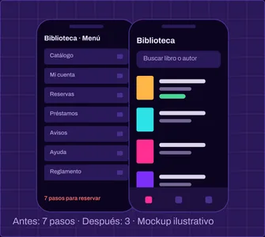

Rediseño de la app de la biblioteca
Encontrar y reservar un libro llevaba siete pasos. Entrevisté a estudiantes, rediseñé el flujo en Figma y lo validé con un test de usabilidad.
- Rol
- Diseño UX/UI (individual)
- Duración
- 6 semanas
- Herramientas
- Figma · Maze · FigJam
- Equipo
- Proyecto individual, materia UX-UI

El problema
Reservar un libro en la app de la biblioteca de la facultad requería pasar por siete pantallas, con menús que repetían opciones. En la observación inicial, 6 de 10 estudiantes abandonaban antes de terminar.
Proceso
-
1 · Entrevistas
5 estudiantes de distintos años. Lo que más repetían: “no sé dónde está mi reserva” y “no sé si el libro está disponible”.
-
2 · Mapa del recorrido
El flujo mezclaba catálogo, cuenta y reglamento en un mismo menú. Tres pasos eran redundantes.
-
3 · Prototipo y test
Prototipo en Figma probado con 5 personas. Tareas: “reservá un libro” y “encontrá tu reserva activa”.
Solución
Un menú inferior con tres destinos (Catálogo, Reservas, Cuenta), búsqueda siempre visible y la disponibilidad dentro de cada resultado. Reservar pasó de siete a tres pasos.
- Antes
- Menú con 7 opciones, disponibilidad solo en el detalle.
- Después
- 3 destinos, disponibilidad en la lista, reserva en 3 pasos.
Resultado
- tareas completadas
- 38% → 91%
- pasos para reservar
- 7 → 3
- participantes encontraron su reserva
- 5 de 5
Valores ilustrativos del trabajo práctico [placeholder: reemplazar por los resultados reales del test].
Aprendizajes
-
Medir antes de rediseñar
Sin los datos de la observación inicial no habría podido demostrar la mejora.
-
Menos opciones, más claridad
Reducir el menú ayudó más que cualquier cambio visual.
-
Qué haría distinto
Probar con estudiantes que usan lector de pantalla desde la primera iteración.